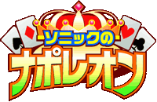
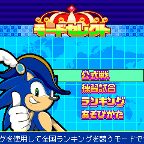
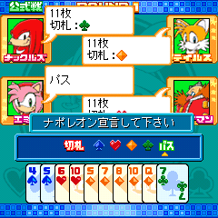
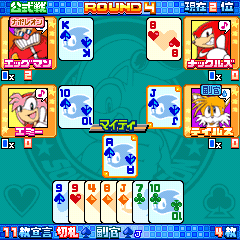
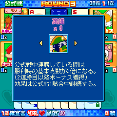
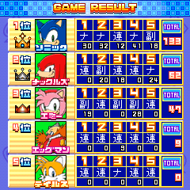

|  |
||
|
■ 紳士と策士のカードバトル！ ■ |
||
|
|
|
| ■ ゲーム概要 |
|  |
５人のプレイヤーがナポレオン軍、連合軍に分かれて２０枚の役カード（各スートの１０，Ｊ，Ｑ，Ｋ，Ａ）を取りあうゲームです。 |
| ■ ナポレオン宣言 |
|  |
ゲームの始めにまずナポレオンを決めます。２０枚の役カードをどれだけ取れるか「ナポレオン宣言」を行い、宣言枚数が一番多いプレイヤーがナポレオンになります。 |
| ■ カードの強さ |
|  |
カードの強さは以下の通りとなります。
↑強い↑ |
| ■ 特殊アイテム |
|  |
｢ソニックのナポレオン」には特殊アイテムがあります。腕に自信がある人、奇跡の逆転を狙いたい人はアイテムを使って高得点を稼ぎましょう。 ◆英雄 ◆名参謀 ◆革命 |
| ■ 攻略のひけつ |
 |
ソニックのナポレオンでは１位になることが最大目的です。時には仲間になるプレイヤーたちも結局は敵です。利用するときは利用して、出し抜くときは思い切って出し抜きましょう。（性格が悪くなるかも！？） ◆ナポレオン |
<<戻る>>
© SEGA